-
Login:
Staff can log in with username and password credentials.
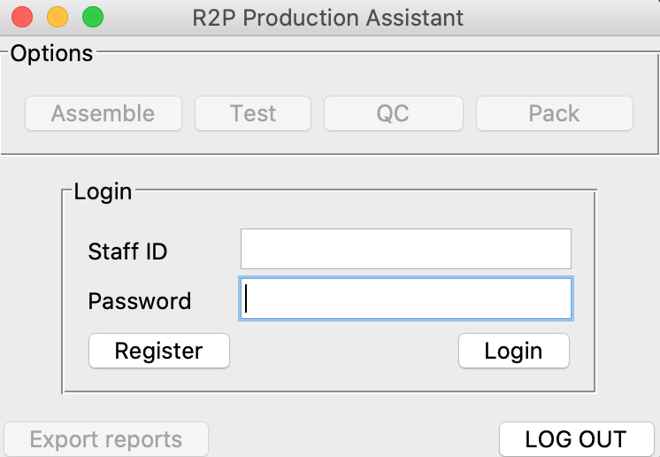 -
Registration:
Once clicked the "Register" button on login page, new user will need to provide their username, full name and password to register as a new user, where given password will be encrypted ('SHA256') then pass to the database.
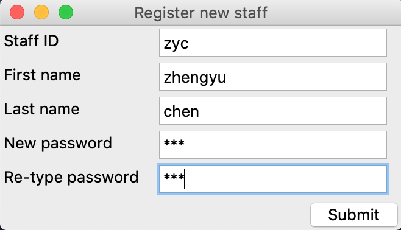 -
Start to make new devices:
Once logged in, you are now good to start assembling, testing, qc or packing by choosing from one of the following options.
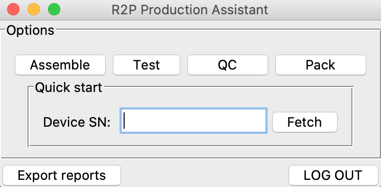 -
Remove device type:
First chose device from the dropdown list, then you can remove the selected device type from database if you'd like to make updates (Note: the device records relative to the device type to be deleted will not be affected in the database, however, you can delete device records manually later in assemble window then re-create new ones).
-
Quick start:
If device SN has previously recorded into the database already, the program will check and pick up uncompleted sections left from last time with given device SN by pop-out windows.
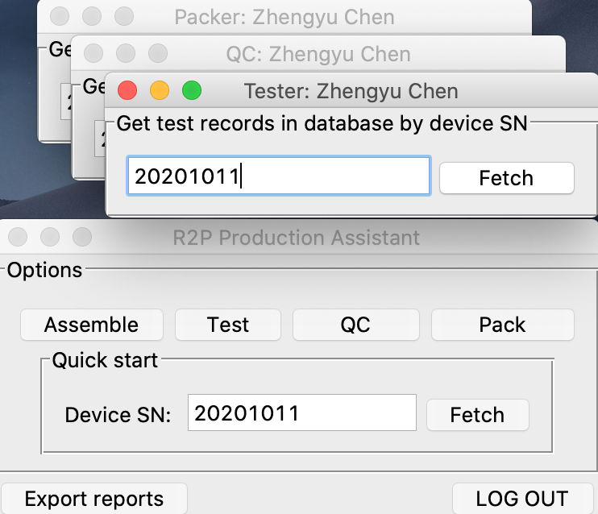 -
Assemble:
When you start to assemble, you can click Add new device type or "Remove selected device type" to add/delete deice types; or select the device type from dropdown list then click" "Confirm" to start assembling with chosen device type.
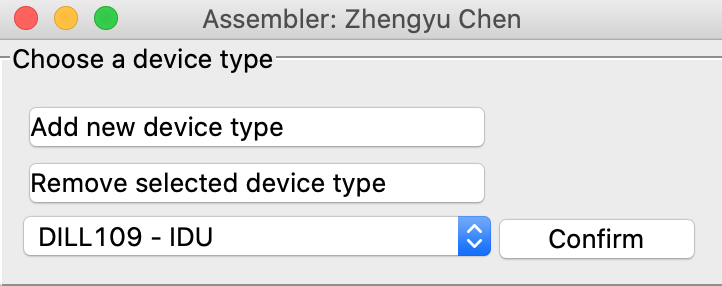 -
Add new device type:
When you are in "Add new device type window", you can create new device type by providing device's name and its component names that requires SN to be recorded.
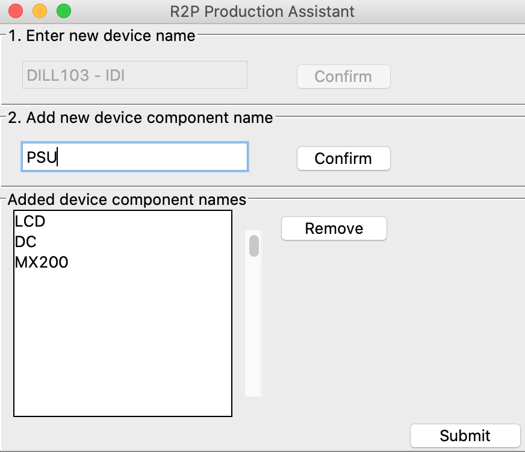 -
Start Assembling:
Once the device type is confirmed, you will be transferred to record SN page, where by giving the device SN:
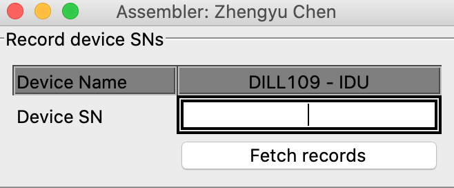-
If device SN is new, then you will start to record component SN configured for chosen device type right away:
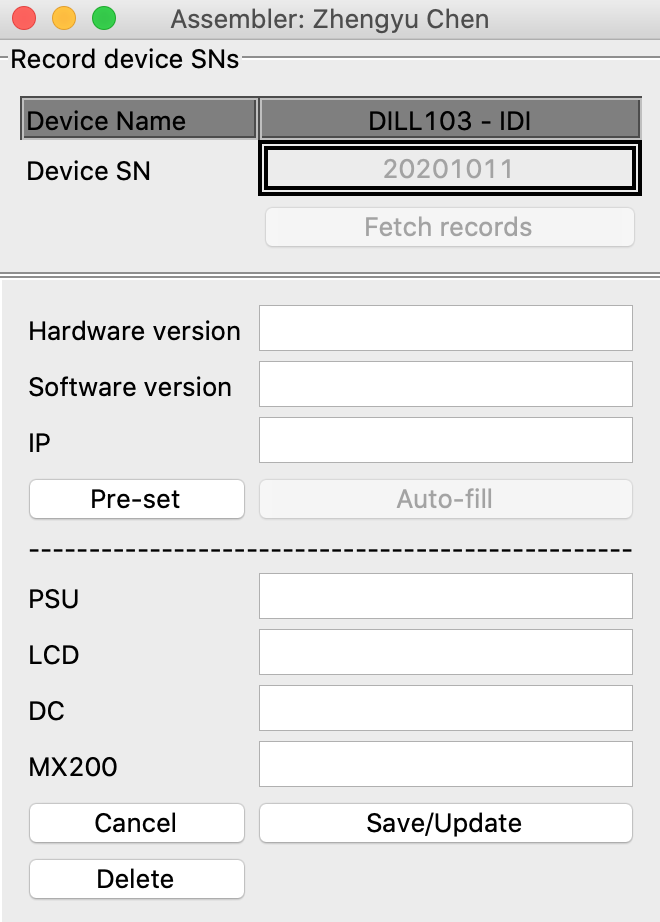 -
Otherwise if the device record has been added in the database already, the program will fetch and fill the recorded SN automatically, where afterwards you can either add or update new SN (Note: be aware that you will need to provide reasons for why any new SN updates are necessary if some component has replaced, and your name, previse & new SN and timestamp of the operation will be recorded):
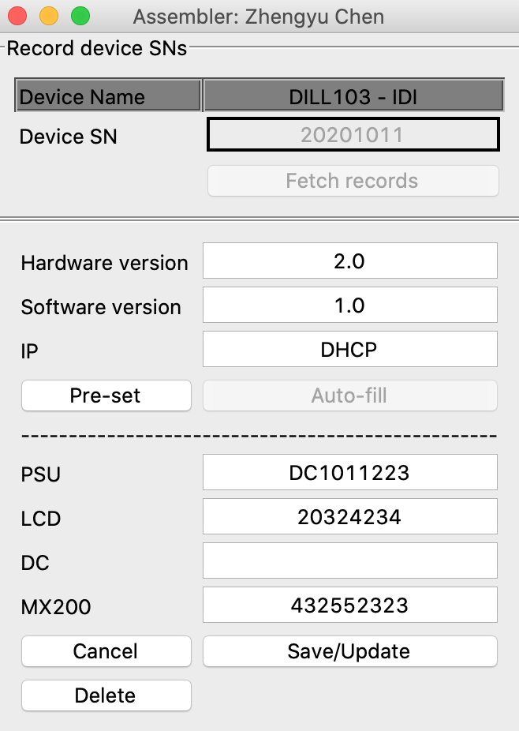 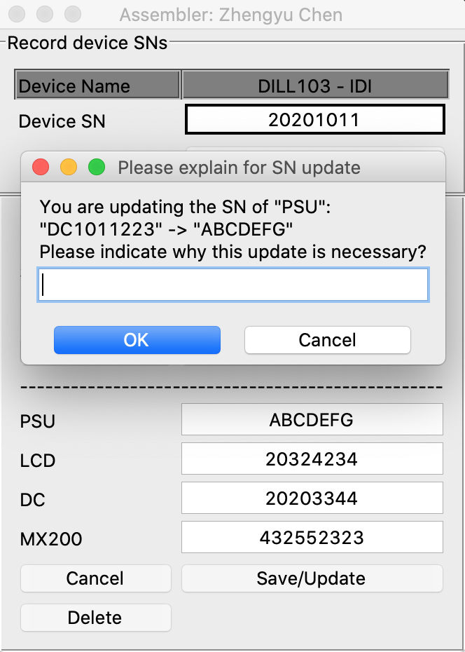
-
-
Prepare test/qc/pack check cases:
Before you are test/qc/packing the device, you will need to have test/qc/pack check cases file ready first, where samples can be found in "test_cases" folder. Follow the instructions to make new "device_name.xls" file which contains test/qc/pack check cases readable by the program, where in short the rules are:
- Name the excel file: device_name + .xls
- In excel file, fill 1st row: category titles
- And fill 2nd - onwards: descriptions of sub-cases
- COL 1 is reserved for TEST
- COL 2 is reserved for PACK
- COL 3 - onwards... are reserved for QC
-
Testing:
Testing can only be proceeded when all required SN are recorded, where you may also be required to take screenshot of your desktop which contains the device configuration information.
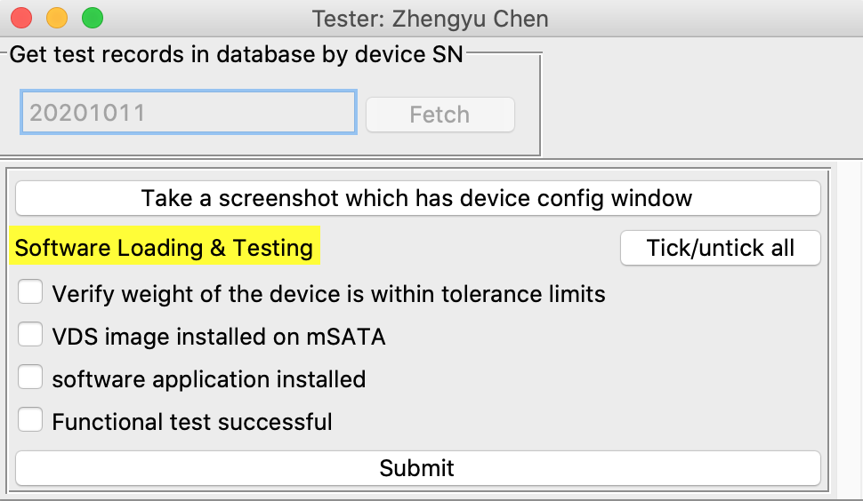 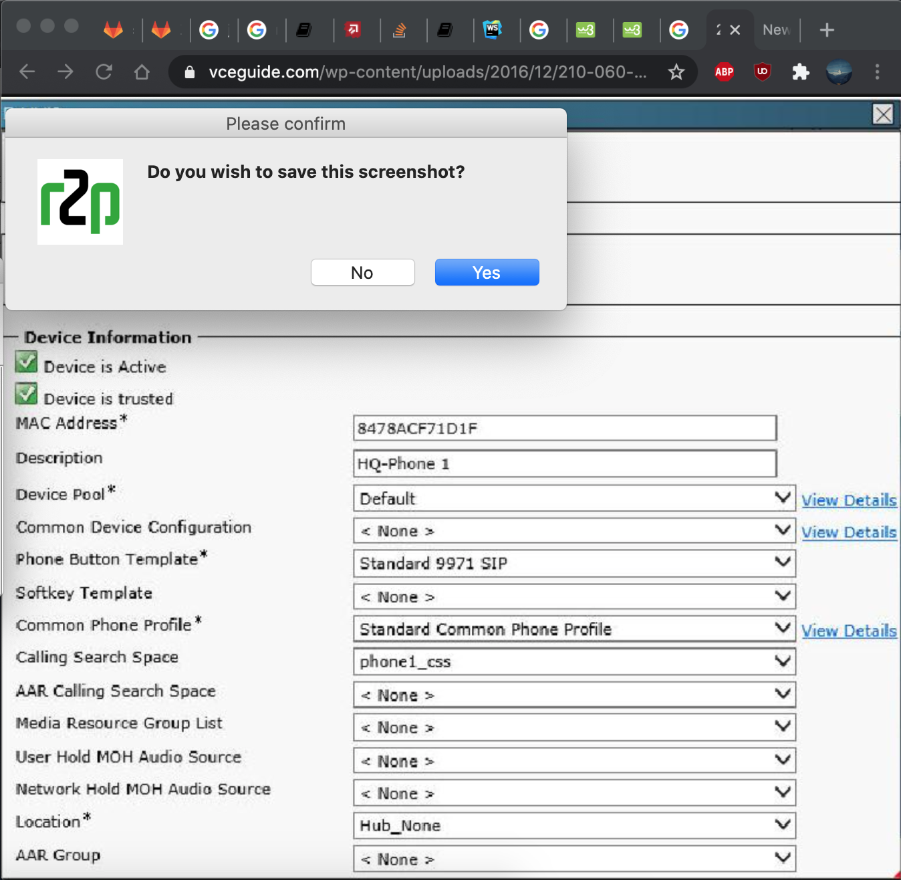 -
QC:
QC can only only be proceeded when all required SN are recorded, and all Test cases are checked. Where warnings will also pop out to notify the QC staff for if there's any SN update history as well.
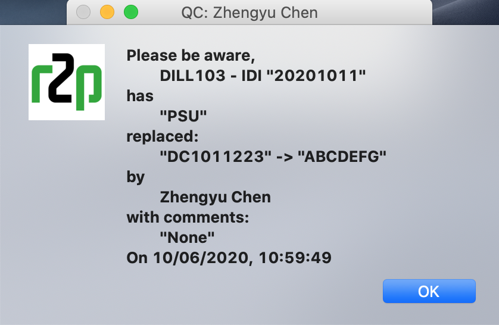 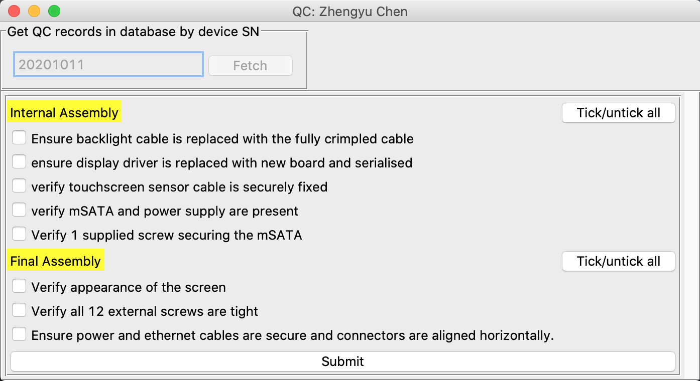 -
Pack:
Pack can only be proceeded when all required SN are recorded, and both Test & QC cases are all checked. Where you may also be required to take device front/back pictures to prove the metal work of the device before packing is in perfect condition.
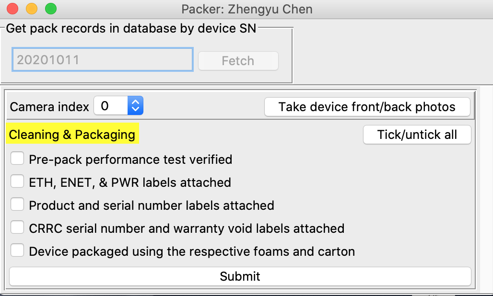
And when the computer is connected with multiple cameras, you can also switch the camera by altering camera index. -
Export QC sheet:
Congrats! In the end, you can export QC sheets into pdf format.
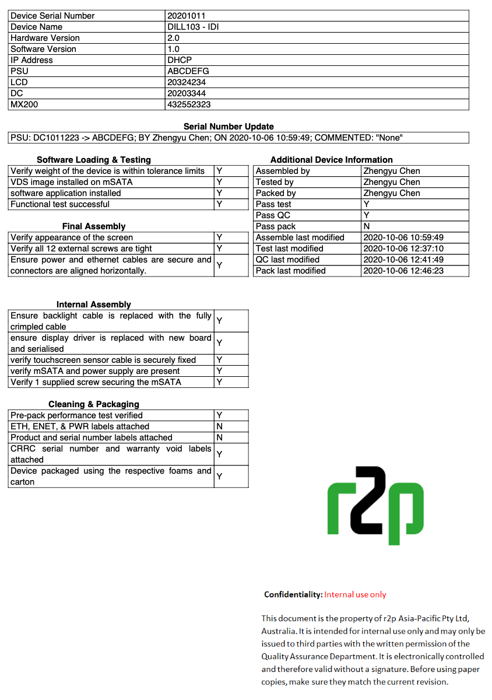